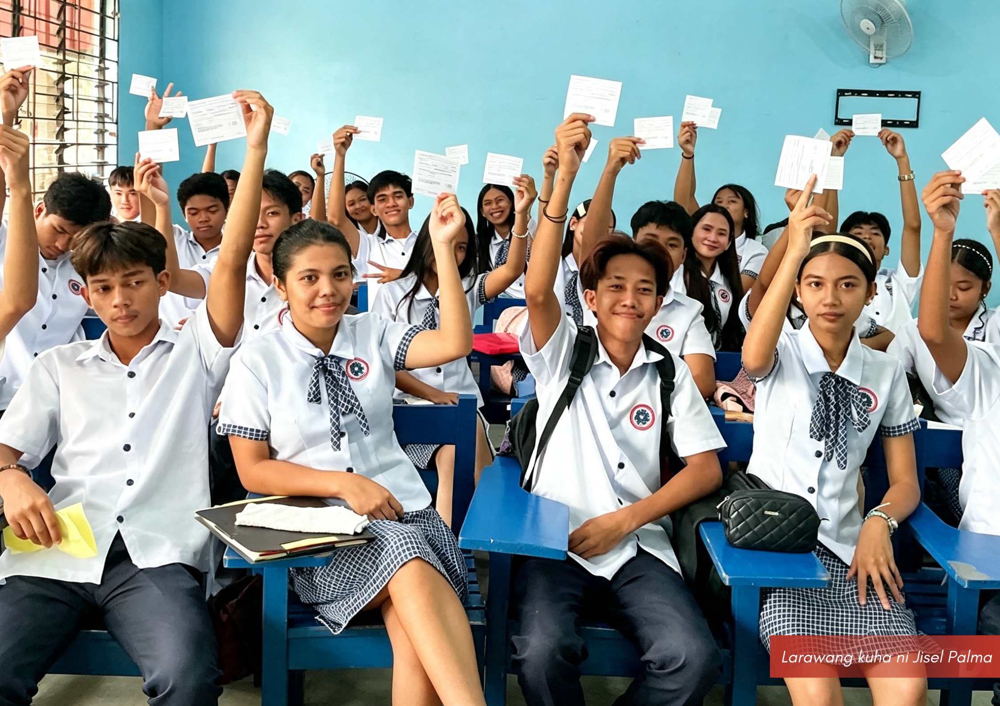
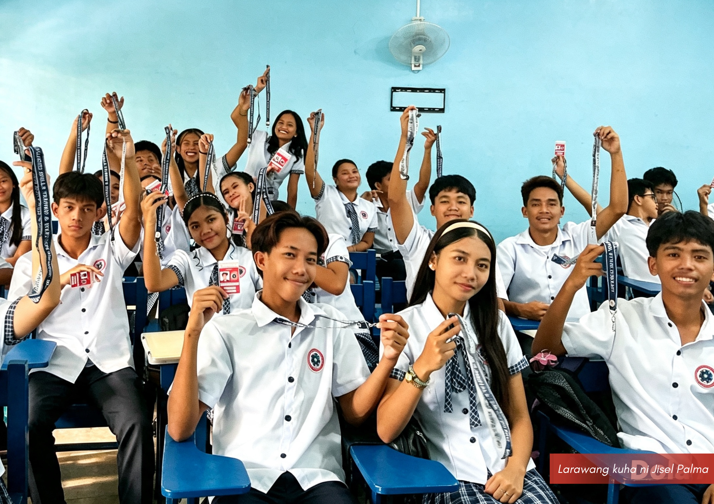

Buwan ng Wikang Pambansa at Kasaysayan, ipinagdiwang sa ASTES; Pangkat Alab, wagi bilang Pinakamagiting na Pangkat
Inilathala noong Agosto 26, 2026 • Ulat ni Sherylyn D. Malit
MATAGUMPAY na ipinagdiwang ng ASTES ang Buwan ng Wikang Pambansa at Buwan ng Kasaysayan nitong Agosto 26, sa pamumuno ng Samahang Filipino.
Sa gabay ng temang "Wikang Filipino at AI: Kasangkapan sa Pananaliksik at Tulay sa Yaman ng Impormasyon," itinampok sa programa ang iba't ibang patimpalak na nilahukan ng apat na pangkat: Alab, Hiraya, Bagwis, at Bagani.
Dominante ang Pangkat Alab matapos magwagi sa Tagisan ng Talino, Letra-Laro, paggawa ng poster, at pagsulat ng slogan. Samantala, pinangunahan naman ng Pangkat Hiraya ang larong Hula Mo Ka (Hulaan Mo, Kabayan) at ang Tagisan sa Pag-awit. Nagningning din sa entablado sina Christom Alban at Chloe Aceveda matapos hirangin bilang Ginoo at Binibining Buwan ng Wika 2026.
Sa pagtatapos ng mga patimpalak, opisyal na itinanghal ang Pangkat Alab bilang Pinakamagiting na Pangkat ng Buwan ng Wikang Pambansa 2026 matapos humakot ng 128 puntos. Sumunod naman ang Hiraya na may 106 puntos, Bagani na may 36 puntos, at Bagwis na may 31 puntos.
Dahil sa kanilang tagumpay, nakatanggap ang Pangkat Alab ng premyong nagkakahalaga ng ₱2,000 mula sa tagapangasiwa at pangulo ng paaralan na si Bb. Bhabes Cayetano. Nagpaabot naman ng malalim na pasasalamat si G. Bryan Adam A. Pereña, tagapayo ng Samahang Filipino, sa lahat ng opisyal ng samahan, mga guro, Astesians, at sa pamunuan ng ASTES na naging katuwang upang maging matagumpay ang gawain.
Intervention Program for Reading and Comprehension, Inilunsad
Inilathala noong Agosto 24, 2026 • Ulat ni Sherylyn D. Malit
Inilunsad ng LinguistiQ Guild ang intervention program para sa mga Astesians bilang pagpapalakas ng kanilang reading comprehension skills nitong Agosto 24, sa Room 102, ASTES Compound
Matapos makakalap ng datos ang LinguistiQ Guild sa nakaraang Literacy and Numeracy Knowledge (LiNK) Assessment para sa Beginning of School Year (BoSY), agad na isinagawa ang programa upang matugunan ang napakalaking hamon sa mga kabataan ngayon: ang hirap sa pagbabasa at pag-unawa sa mga tekstong binabasa. Sa inilabas na resulta ng ASAS, 6% lamang sa Baitang 11 ang pumasok sa "At Grade Level" na may katumbas na gradong 76-100%, sa English. 48% sa "Emerging" na may katumbas na 51-75%, habang ang natitirang 46% ay nasa "Developing" na katumbas ang 50% pababa. Sa Baitang 12 naman, 25% ang pumasok sa "At Grade Level", 28% sa "Emerging", at ang 47% ay nasa "Developing."
Sa programang ito, tututukan ang mga nasa Emerging at Developing level. Umaasa naman ang tagapayo ng LinguistiQ Guild na si Ma'am Jisel Palma na mas maraming mag-aaral ang makakapasok sa At Grade Level sa End of School Year (EoSY) LiNK Assessment.
Random Bag Inspection, Isinagawa sa ASTES
Inilathala noong Agosto 24, 2026 • Ulat ni Sherylyn D. Malit
Isinagawa ang random bag inspection sa ASTES nitong Lunes, Agosto 24, 2024 sa ASTES bago magsimula ang klase.
Matapos ang general assembly noong umaga ng Agosto 24, inanunsyo ni Director for Student Affairs and Services (ASAS) Sir Paul Jerome G. Alban na magsasagawa ng random bag inspection bago magsimula ang klase. "In light of the recent shooting incidents in Ateneo de Zamboanga, we'll be conducting bag inspection to ensure that no students are carrying prohibited items in school, including cigarettes, e-cigarettes or vapes, pornographic materials, liquors, illegal drugs, deadly weapons, and other objects that could cause harm to students and staff," aniya. Sa pangunguna ng mga guro, katuwang ang Central Student Parliament, maayos na naisagawa ang bag inspection. May mga nakumpiskang gunting, ngunit dahil sa ito ay gagamitin sa mga asignatura, binigyang-linaw ng ASAS at CSP na ang mga ito ay maaari ring kunin sa oras na kailangan sa klase o pagkatapos ng klase bago umuwi. Ang ganitong uri ng hakbang ay upang matiyak na ligtas at maayos ang paaralan sa panganib na maaaring gawin ng mismong mga mag-aaral.
Pangakong Freebies ng ASTES, Tinupad sa Grade 11
Inilathala noong Hulyo 31, 2026 • Ulat ni Sherylyn D. Malit


IPINAMAHAGI ng ASTES ang mga ipinangakong "freebies" para sa mga mag-aaral ng Baitang 11 sa magkakahiwalay na iskedyul mula Hunyo hanggang Hulyo ng taong kasalukuyan.
Natanggap ng mga mag-aaral ang libreng uniporme noong Hunyo 18, insurance noong Hunyo 29, ID noong Hulyo 2, at ang one-time allowance noong Hulyo 30. Pinangunahan ni Ma’am Jisel Palma, gurong tagapayo, ang pamamahagi habang lumalagda naman sa claiming form ang mga mag-aaral bilang patunay ng pagtanggap.
Ayon sa pangulo ng paaralan, tradisyon na ng ASTES ang pagbibigay ng suporta upang mabawasan ang gastusin ng mga magulang. Ang insurance ay bilang alalay sa mga mag-aaral sa pagkakataon magkaroon ng insidente sa loob ng paaralan, at ang allowance ay inilaan para sa mga panimulang gamit sa pag-aaral tulad ng kuwaderno at panulat.
Samantala, inabot ng apat na araw ang pagpoproseso ng allowance dahil kinailangan munang makumpleto ng mga mag-aaral ang mga dokumentong hinihingi ng Private Education Assistance Committee (PEAC) upang matiyak ang kanilang opisyal na pagpapatala.
"Malaking pasasalamat namin sa ASTES. Isipin mo, libre na ang uniform, may pa-allowance pa. Ay, saan ka pa makakakita ng paaralang ganito?" pahayag ng isang magulang na labis ang kagalakan.
Ipinaalala naman ng pangulo ng paaralan sa mga mag-aaral na magsumikap at pahalagahan ang mga natanggap na pribilehiyo dahil hindi lahat ng kabataan ay nabibigyan ng ganitong pagkakataon. Nanawagan din siya sa mga magulang na katuwangin ang mga guro sa paggabay at pagdisiplina sa mga anak pagdating sa aspetong akademiko.
Buwan ng Nutrisyon 2026, Ipinagdiwang sa ASTES; CSP, Humakot ng Parangal
Inilathala noong Hulyo 30, 2026 • Ulat ni Sherylyn D. Malit
IPINAGDIWANG ng mga Astesian ang Buwan ng Nutrisyon 2026 sa pangunguna ng Society of Young Scientists (SOYS) noong Hulyo 30 sa bakuran ng paaralan.
Bitbit ang temang "Nutrisyon at Kalikasan, Ating Pangalagaan!", matagumpay na itinataguyod ang iba't ibang patimpalak tulad ng poster making, slogan making, at table/food presentation na nilahukan ng mga curricular organizations at ng Central Student Parliament (CSP).
Alinsunod sa mandato ng Kagawaran ng Edukasyon (DepEd) na bawal maabala ang mga regular na klase tuwing instructional block, madiskarteng isinagawa ang table/food presentation sa oras ng lunch break, samantalang ang slogan at poster making naman ay nirepaso pagkatapos ng huling klase.
Sa pagtatapos ng pagdiriwang, itinanghal ang CSP bilang kampeon sa parehong kategorya ng poster making at table/food presentation. Samantala, hindi naman nagpahuli ang Samahang Filipino matapos nilang sungkitin ang unang puwesto sa slogan making.
Ikalawang Summative Examination, Matagumpay na Isinagawa
Inilathala noong Hulyo 28, 2026 • Ulat ni Sherylyn D. Malit
ISINAGAWA ang ikalawang Summative Examination nitong Agosto 28, sa ASTES.
Matapos ang labinlimang araw mula nang isagawa ang unang summative exam, matagumpay namang naisagawa at natapos ang ikalawang summative examination sa ASTES. Alinsunod sa mandato ng DepEd Order No. 15, s. 2026, isasagawa ang dalawang summative assessment pagkatapos ng labinlimang araw.
Naging istrikto sa pagsasagawa ng pagsusulit ang mga guro ng ASTES upang masiguro na ang lahat ay magsasagot ng patas at naangkop sa alituntunin ng paaralan. Bago magsimula, kinumpiska ang lahat ng portable devices ng mga mag-aaral gaya ng cellphone, tablet, at iba pa. Tiningnan din muna ang mga ID bago bigyan ng test paper, at angkop na gupit sa mga lalaki ay isinaalang-alang din bago magsimula.
Ang susunod na pagsusulit ay ang Term Examination na, na nakatakda namang gawin sa Agosto 28, 2026.
Unang Summative Examination sa ASTES, Matagumpay na Isinagawa
Inilathala noong Hulyo 6, 2026 • Ulat ni Sherylyn D. Malit
MATAGUMPAY na dumaan sa kanilang Unang Summative Examination para sa Unang Termino ang mga mag-aaral ng Advanced Skills Training and Education Services, Inc. (ASTES) noong Hulyo 6.
Naging puspusan ang paghahanda ng mga Astesian para sa nasabing assessment na ikinasá itong matapos ang unang 15 araw ng instructional block.
Sa kabila ng kaba, mahigpit na ipinatupad ng pamunuan ang mga patakaran sa pagsusulit alinsunod sa umiiral na polisiya ng paaralan. Bawat silid-aralan ay binantayan ng mga nakatalagang guro upang masigurong patas at walang anumang uri ng pandaraya ang magaganap sa gitna ng assessment.
Sa pagtatapos ng araw, mapayapang naisakatuparan ang pagsusulit kung saan naitala ang 100% attendance ng mga mag-aaral at walang naiulat na kaso ng akademiko o disiplinaryong paglabag.
Inaasahang ilalabas ang mga opisyal na marka sa mga susunod na araw, habang nakatakda namang isagawa ang ikalawang summative assessment sa darating na Hulyo 28.
Bagong Halal at Hirang na Opisyal ng CSP; Nanumpa Na
Inilathala noong Hunyo 13, 2026 • Ulat ni Sherylyn D. Malit
NANUMPA sa tungkulin ang mga bagong halal at hirang na opisyal ng Central Student Parliament (CSP) para sa Taong Panuruan 2026-2027 noong Hunyo 13, 2026, sa Opisina ng Pangulo ng Paaralan.
Ginanap ang panunumpa sa harap nina Ma'am Bhabes Cayetano, Pangulo ng Paaralan, at Sir Paul Alban, Direktor ng Student Affairs and Services.
Alinsunod sa Election Code, ang Kinatawan ng Baitang 11 ay hinirang sa halip na ibonoto, matapos mapatunayang pasok ang mag-aaral sa mga kwalipikasyon para maging opisyal ng CSP.
Mainit naman ang naging pagbati ni Ma'am Bhabes sa mga bagong pinuno kung saan hinamon niya ang mga ito na higitan pa ang mga nagawa ng nagdaang taon.
"I welcome and congratulate you all! Sana hindi lamang ninyo mapantayan ang accomplishments ng CSP last year; sana mahigitan niyo pa. Yes, you have your own strengths as a group, but we hope to see you follow the footsteps of success of the last batch's officers," ani Cayetano, sabay diin sa kahalagahan ng pagiging huwaran at tapat sa serbisyo.
Ang CSP ang pinakamataas na pamahalaang pangmag-aaral sa ASTES na ginagabayan ng sarili nitong Saligang Batas. Kinikilala rin ng paaralan ang 'autonomy' o pagsasarili ng organisasyon sa pagpapatupad ng mga patakaran para sa pagdisiplina at pagkatawan sa mga Astesian, habang tinitiyak na ang lahat ng hakbang ay alinsunod sa mga umiiral na tuntunin ng institusyon.
Taong Panuruan 2026-2027, Nagsimula na; Mga Pagbabago sa Sistema ng Edukasyon sa Bansa, Ipinatupad sa ASTES
Inilathala noong Hunyo 8, 2026 • Ulat ni Sherylyn D. Malit
OPISYAL nang sinimulan ang mga klase sa ASTES para sa taong panuruan 2026-2027 noong Hunyo 8, 2026, kasabay ng pagpapatupad ng mga radikal na pagbabago sa kurikulum ng bansa.
Mainit na tinanggap ng pamunuan ng paaralan ang mga Astesian sa unang araw ng pasukan. Pinangunahan ni Sir Paul Jerome G. Alban, Direktor ng Student Affairs and Services, ang pagtanggap sa mga mag-aaral, lalo na sa mga bagong mag-aaral ng Baitang 11. Isinagawa sa unang araw ang mga nakasanayang gawain tulad ng panalangin, pag-awit ng Pambansang Awit, Calapan City Hymn, at ASTES Hymn.
Kaalinsabay nito, pormal ding inanunsyo ang mga pagbabago sa sistema tulad ng three-term calendar at ang pagbalasa sa mga asignatura. Mananatili ang kasalukuyang Baitang 12 sa lumang kurikulum. Samantala, ang Baitang 11 naman ang unang sasailalim sa Strengthened Senior High School Curriculum, kung saan binawasan ang Core Subjects mula 15 tungo sa lima na lamang.
Matapos ang pagpapakilala sa mga guro at opisyal, ipinabatid sa mga mag-aaral na hindi muna magsisimula ang pormal na akademikong talakayan sa unang linggo dahil ito ay nakalaan para sa opening block. Naghanda ang paaralan ng mga programa upang ihanda ang mga mag-aaral sa papasok na 55-day uninterrupted instructional block, kung saan mahigpit na ipagbabawal ang anumang estratehikong abala o mga extracurricular activities.
Leadership Training and Capacity Building, Dinaluhan ng Student Leaders
Inilathala noong Hunyo 4, 2026 • Ulat ni Sherylyn D. Malit
Matagumpay na isinagawa ang Leadership Training and Capacity Building para sa mga halal na opisyal at mga boluntaryong Astesian sa Room 103 noong Hunyo 4, 2026.
Nagbigay ng oportunidad ang ASTES Student Affairs and Services o ASAS para sa pagpapalago ng kahusayan at kasanayan ng mga bagong halal na opisyal ng lahat ng samahang pampaaralan ng ASTES. Kasama ang keynote speaker at facilitator na si Engr. Jollian Karl M. Tria, binigyang-diin niya ang responsibilidad ng isang lider.
“Be confident; as a leader you have to step up for the team. Magsilbi ka na role model to your members to boost their confidence and when it’s their time to step up, they are prepared.” ani Engr. Tria.
Layunin ng aktibidad na ihanda ang mga bagong opisyal sa kanilang mga tungkulin at sa lahat ng mga ipapatupad na proyekto at programa ng kanilang samahan. Lubos naman ang pasasalamat ng pangulo ng paaralan na si Ms. Maria Cleofas Cayetano kay Engr. Tria sa pagpapaunlak sa imbitasyon ng paaralan. Inaasahang mas magiging aktibo at maayos ang pamumuno ng mga student leaders ngayong school year.